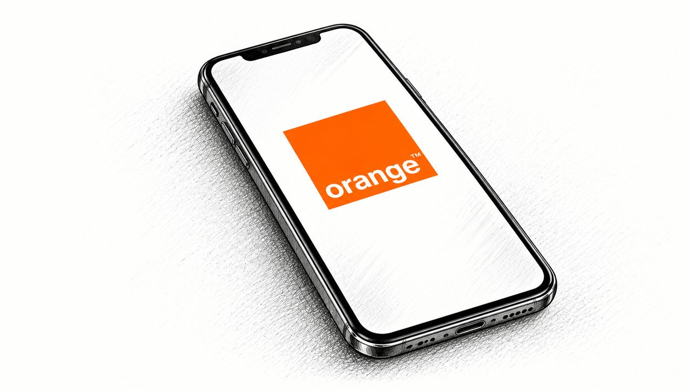

Tarife & Angebote Orange bringt Flash-Reconnect bei Glasfaserausfällen Orange hat das Feature Reconnexion Flash für Livebox-Kunden sowie 200 Gigabyte mobiles Datenvolumen für betroffene Festnetzkunden gestartet, um Internet-Ausfälle bei Glasfaserstörungen in wenigen Minuten über das Smartphone zu überbrücken. Orange · EuropaTarife & Angebote · Europa
Orange bringt Flash-Reconnect bei Glasfaserausfällen
Orange hat das Feature Reconnexion Flash für Livebox-Kunden sowie 200 Gigabyte mobiles Datenvolumen für betroffene Festnetzkunden gestartet, um Internet-Ausfälle bei Glasfaserstörungen in wenigen Minuten über das Smartphone zu überbrücken.
Was das für uns heißtAutomatische mobile Backup-Option bei Festnetzausfällen mit 200 GB – ein klares Vorbild für unsere Gigafest-Tarife.
Originalquelle öffnen ↗ Univers Freebox